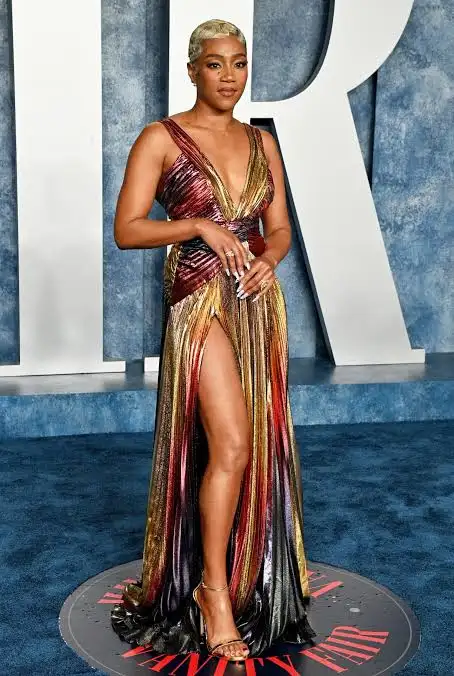

Packers RB Josh Jacobs Faces Two Misdemeanor Charges After May Incident
Published: Thursday, August 27, 2026
Green Bay Packers running back Josh Jacobs is facing two misdemeanor criminal charges stemming from an alleged confrontation with his girlfriend at his Wisconsin home in May.
Read more
Virginia Running Back Solomon Beebe Faces Animal Cruelty Charges Ahead of Season Opener
Published: Friday, August 21, 2026
University of Virginia running back Solomon Beebe is facing three misdemeanor animal-cruelty charges after authorities investigated allegations involving his pet pit bull.
Read more

NFL Practice Erupts as Saints Receiver Brock Rechsteiner Brings Wrestling Family Legacy to the Field
Published: Tuesday, August 18, 2026
Saints wide receiver Brock Rechsteiner took Cowboys safety Jalen Thompson down with a wrestling-style takedown during a heated Saints-Cowboys joint practice.
Read more
Terrion Arnold Reportedly Set to Join Seahawks While Facing Serious Felony Charges
Published: Wednesday, August 13, 2026
Former Detroit Lions cornerback Terrion Arnold is reportedly preparing to continue his NFL career with the Seattle Seahawks despite facing eight felony charges connected to an alleged kidnapping and armed robbery scheme.
Read more

Prichard Colon Dies at 33 After Decade-Long Battle From Devastating Boxing Injury
Published: Wednesday, August 13, 2026
Former professional boxer Prichard Colon has died at the age of 33, more than a decade after a devastating brain injury suffered during a 2015 bout left him with permanent neurological damage.
Read more

Russell Westbrook Walks Away From NBA After Legendary 18-Year Run
Published: Wednesday, August 13, 2026
Nine-time All-Star Russell Westbrook announced his retirement at age 37, ending an 18-season NBA career with 209 career triple-doubles and an MVP award...
Read more

Fever Rally Around Stephanie White in Statement Win Over Liberty
Published: Tuesday, August 12, 2026
The Indiana Fever answered a week of controversy with one of their most impressive performances of the season, defeating the New York Liberty 106-92 while showing public support for head coach Stephanie White...
Read more

Man at Center of Alleged NFL Investment Scam Dies as Players Seek Millions in Lost Money
Published: Tuesday, August 12, 2026
Former professional football players and other investors are trying to determine whether they can recover hundreds of thousands of dollars after the New Jersey man accused of handling their investments was found dead...
Read more
Bizarre Rules Confusion Causes 16-Minute Delay in Red Sox-Blue Jays Game
Published: Tuesday, August 11, 2026
A confusing sequence in the seventh inning caused a 16-minute delay during the Boston Red Sox’s 2-1 loss to the Toronto Blue Jays at Rogers Centre.
Read more

Phillies Hold Off Cardinals as Andrew Painter and Alan Rangel Rescue Depleted Bullpen
Published: Tuesday, August 11, 2026
The Philadelphia Phillies found a way to protect a narrow lead Monday night despite entering the game with a severely limited bullpen.
Read more

Fantasy Football 2026: Players You May Want to Avoid at Their Current Draft Price
Published: Monday, August 10, 2026
ESPN has released its latest fantasy football analysis identifying several players who could be overvalued in 2026 drafts. The list focuses on players whose current average draft position may not match their injury outlook, expected workload, consistency or overall risk...
Read more
The NBA Loses a Basketball Visionary: Don Nelson Dies at 86
Published: Sunday, August 9, 2026
The basketball world is mourning the loss of Don Nelson, one of the NBA's most accomplished coaches and most influential innovators. Nelson died Sunday at the age of 86...
Read more

Wynonna Judd’s Daughter Grace Kelley Remains in Custody as Judge Rejects Request to Leave Jail for Birth
Published: Friday, August 28, 2026
Grace Pauline Kelley, the daughter of country music star Wynonna Judd, was denied a temporary release from jail to give birth to her second child, according to recently surfaced court records.
Read more

Lil Yachty’s WWE Debut Draws Fan Backlash as Rapper Prepares for Five-Minute Match With Baron Corbin
Published: Sunday, August 23, 2026
Lil Yachty is preparing to make his WWE in-ring debut against Baron Corbin at Sunday Night’s Main Event on Sept. 6 in Atlanta.
Read more

Quality Control Co-Founder Pierre “P” Thomas Hospitalized After Reported Heart Attack
Published: Friday, August 21, 2026
Pierre “P” Thomas, co-founder of Quality Control Music, is hospitalized in Las Vegas after reportedly suffering a heart attack.
Read more

Chris Brown Faces $13.8M Judgment Fight as Former Housekeeper Targets Tour Income
Published: Friday, August 21, 2026
Chris Brown is fighting efforts by former housekeeper Maria Avila to collect a nearly $13.8 million judgment from his entertainment income as he seeks a new trial.
Read more

CJ Wallace Takes Legal Action Over Changes to Voletta Wallace’s Estate
Published: Friday, August 21, 2026
Christopher “CJ” Wallace Jr., Biggie’s son, has gone to court over changes made to his grandmother’s estate plan shortly before her death in February 2025.
Read more

Frawst Celebrates 1 Million Spotify Streams With “Broken”
Published: Tuesday, August 18, 2026
The New York independent artist passes the million-stream mark with “Broken” while also building momentum on YouTube.
Read more

David Banner Connects Southern Rap Generations on “WHERE YOU FROM?”
Published: Tuesday, August 18, 2026
David Banner's new single features T.I., Juicy J and Duke Deuce, connecting Atlanta, Memphis and Mississippi across Southern hip-hop generations.
Read more

Trina Teases Seventh Album as Potential Final Chapter of Her Rap Career
Published: Tuesday, August 18, 2026
After nearly three decades of breaking barriers in hip-hop, Trina may be preparing to close the book on her recording career, teasing her upcoming seventh studio album as a possible final release.
Read more

Remy Ma Fires Back at Claressa Shields With Savage “Clearance Rack” Diss on “Wanna Go”
Published: Friday, August 14, 2026
Remy Ma appears to be answering Claressa Shields with a new diss track, and she isn’t exactly being subtle.
Read more

Lil Durk’s “Pissed Me Off” Music Video Allowed as Evidence in Federal Trial
Published: Friday, August 14, 2026
A federal judge has ruled that prosecutors will be allowed to present Lil Durk’s 2021 song “Pissed Me Off” and its accompanying music video to jurors when the rapper goes to trial on federal murder-for-hire charges.
Read more

Remy Ma Defies Papoose’s Legal Warning — Performs Controversial Diss Track Anyway
Published: Wednesday, August 13, 2026
The ongoing fallout between Remy Ma and Papoose has taken another turn after Remy performed one of her most talked-about songs months after Papoose’s legal team reportedly demanded that she stop distributing it.
Read more

NBA YoungBoy Says He May Never Return to America After South Korea Trip
Published: Wednesday, August 12, 2026
NBA YoungBoy told Funny Marco he does not see himself returning to the United States after experiencing life in South Korea, citing the country's atmosphere, cleanliness and sense of safety...
Read more

Josh Shapiro Appears Alongside Meek Mill in New Philly Music Video
Published: Tuesday, August 12, 2026
Pennsylvania Gov. Josh Shapiro is making an unexpected appearance in Meek Mill's latest music video, connecting the state's top elected official with one of Philadelphia's most recognizable hip-hop artists...
Read more

Taylor Swift and Lyle Lovett Lead Nashville Songwriters Hall of Fame Class
Published: Tuesday, August 12, 2026
Taylor Swift is set to receive another major career honor, this time alongside Lyle Lovett as part of the newest class of the Nashville Songwriters Hall of Fame...
Read more

Ne-Yo Hit With Lawsuit Over Alleged Dog Attack at Georgia Property
Published: Tuesday, August 11, 2026
Grammy-winning singer Ne-Yo is being sued by a woman who says she was injured after one of the entertainer’s dogs allegedly attacked her while she was making a delivery...
Read more

Tupac Shakur Murder Trial Begins Nearly 30 Years After Rapper's Death
Published: Monday, August 10, 2026
Nearly 30 years after Tupac Shakur was killed in Las Vegas, the case surrounding the legendary rapper's death is finally going before a jury...
Read more

Usher Laughs Off Viral Clone Rumors Following New Jersey Concert With Chris Brown
Published: Monday, August 10, 2026
Usher found himself at the center of an internet conspiracy after his performance with Chris Brown at MetLife Stadium, with some claiming he was replaced by a clone...
Read more

Lana Condor Opens the Door to a Jubilee Comeback as Marvel Builds Its Next X-Men Team
Published: Thursday, August 27, 2026
Lana Condor has reached out to Marvel about returning as Jubilee in the upcoming X-Men reboot, as the studio builds its new mutant team for 2028.
Read more
Tim Curry, ‘Rocky Horror Picture Show’ and ‘It’ Icon, Dies at 80
Published: Wednesday, August 26, 2026
Tim Curry, the acclaimed British actor whose unforgettable performances in The Rocky Horror Picture Show, It, Clue and Home Alone 2 made him one of the most recognizable performers of his generation, has died at 80.
Read more
Demon Hunter Sues Netflix Over ‘KPop Demon Hunters’ Branding, Alleging Trademark Confusion
Published: Wednesday, August 26, 2026
Christian metal band Demon Hunter has filed a federal trademark lawsuit against Netflix over its “KPop Demon Hunters” franchise, citing consumer confusion in music, merchandise and live entertainment.
Read more

Michael Wright, ‘The Five Heartbeats’ Star, Dies at 70
Published: Saturday, August 22, 2026
Michael Wright, the acclaimed actor whose powerful performance as Eddie King Jr. in The Five Heartbeats made him a lasting favorite, has died at 70.
Read more
Bunny Levine Dead at 97: Remembering the ‘Gilmore Girls’ and ‘Everybody Loves Raymond’ Actress
Published: Thursday, August 20, 2026
Bunny Levine, the veteran character actress whose career included Gilmore Girls, Everybody Loves Raymond, Shameless and La La Land, has died at 97.
Read more
Nelly Miss Everything and Everything Celz Keep Philadelphia Laughing
Published: Wednesday, August 19, 2026
Philadelphia’s comedy and entertainment scene is getting another dose of energy from local personalities Nelly Miss Everything and Everything Celz.
Read more

Fast Forever Set to Arrive in 2028 as Fast & Furious Saga Nears Its End
Published: Tuesday, August 18, 2026
Universal Pictures has announced that Fast Forever will hit theaters on March 17, 2028, continuing the Fast & Furious saga.
Read more
Yung Kash Capre and Dohtty Address Viral Philadelphia Altercation
Published: Tuesday, August 18, 2026
A confrontation between Yung Kash Capre and Dohtty has taken over social media after video of the brief Philadelphia altercation began circulating online.
Read more
Crown Taken Away, Legal Fight May Be Next for Former Miss North Carolina USA
Published: Wednesday, August 13, 2026
Brittany Boltinhouse is preparing to challenge the loss of her Miss North Carolina USA title, with her lawyer alleging that her religious and political beliefs played a role.
Read more

Tiffany Haddish Resolves Georgia DUI Case With Guilty Plea
Published: Tuesday, August 12, 2026
Actress and comedian Tiffany Haddish has reached a deal in a long-running DUI case in Fayette County, Georgia, entering a guilty plea that eliminates the need for a scheduled trial...
Read more

Ben Jones, Best Known as Cooter on 'The Dukes of Hazzard,' Dies at 84
Published: Monday, August 10, 2026
Ben Jones, the actor who brought the memorable mechanic Cooter Davenport to life on "The Dukes of Hazzard," has died at the age of 84...
Read more

Disney+ Cancels Marvel Series 'Wonder Man' After One Season
Published: Monday, August 10, 2026
Marvel fans will not be getting another season of Wonder Man after Disney+ reversed an earlier decision to continue the series...
Read more


Philadelphia Officer Placed on Leave After Man Dies in Hit-and-Run Following Police Encounter
Published: Friday, August 28, 2026
A Philadelphia police officer has been placed on administrative leave after investigators determined that the officer encountered a man lying in a roadway shortly before the man was struck and fatally injured by a hit-and-run driver.
Read more

Khalid Sheikh Mohammed Set for 2028 Trial in Long-Running 9/11 Case
Published: Friday, August 28, 2026
More than two decades after the September 11 terrorist attacks, the U.S. military has set a new trial date for Khalid Sheikh Mohammed, the alleged principal planner of the attacks.
Read more

Former Chick-fil-A Worker Sentenced After $80,000 Mac and Cheese Refund Scheme
Published: Friday, August 28, 2026
A former Chick-fil-A employee in Texas has been sentenced to prison after investigators said he exploited the restaurant’s point-of-sale system to generate hundreds of fraudulent refunds totaling more than $80,000.
Read more

14-Year-Old Girl Killed While Filming TikTok Videos; Teen Charged in Washington, D.C. Shooting
Published: Friday, August 28, 2026
A 14-year-old Washington, D.C., girl was fatally shot while spending time with other teenagers and recording TikTok videos, and authorities now allege that a boy who was with her pulled the trigger.
Read more

ICE Awards $16.7 Million Contract for Electric Shock Gloves Amid Growing Concerns Over Use of Force
Published: Thursday, August 27, 2026
ICE has awarded a $16.7 million contract for 6,000 electric shock gloves, drawing sharp criticism from lawmakers and civil rights advocates over use of force concerns.
Read more

Himalayan Disaster Unleashes Deadly Floods as Glacier Collapse Ravages Nepal-Tibet Border
Published: Thursday, August 27, 2026
A catastrophic glacier collapse on the Nepal-Tibet border has left hundreds dead and over 1,300 missing as debris-filled floods ravage Himalayan communities.
Read more

Florida Officer Accused of Repeatedly Tracking Estranged Wife Through License Plate Cameras
Published: Tuesday, August 25, 2026
A Florida police officer is accused of using the department’s Flock Safety license plate reader system to look up his estranged wife’s vehicle 717 times between September 2024 and June 2026.
Read more

35-Year-Old Man Killed in Early-Morning Kensington Shooting as Philadelphia Police Search for Suspect
Published: Sunday, August 23, 2026
A 35-year-old man was fatally shot early Sunday morning in Philadelphia’s Kensington neighborhood. Police are searching for a suspect.
Read more

Ohio Doctor Who Studied Adolescent Homicide Killed in Alleged Plot Involving Her Daughter
Published: Sunday, August 23, 2026
An Ohio physician whose academic work examined adolescent homicide was fatally shot inside her home. Investigators allege her 18-year-old daughter helped plan the killing.
Read more

Connecticut Man Missed $5.8 Million Lottery Jackpot After Discovering Winning Ticket Too Late
Published: Sunday, August 23, 2026
Clarence Jackson discovered he had a winning $5.8 million lottery ticket on the very last day to claim it — but circumstances prevented him from collecting.
Read more

Arkansas Woman Sentenced to 20 Years After Shooting Ex-Boyfriend 17 Times
Published: Sunday, August 23, 2026
Rebecca Jane Mryglod, 38, has been sentenced to 20 years in an Arkansas state prison after admitting that she shot her former boyfriend repeatedly inside his home.
Read more

Navy Considers Renaming Carrier Named for Pearl Harbor Hero Doris Miller
Published: Friday, August 21, 2026
Navy officials are considering changing the name of a future aircraft carrier originally named after Doris “Dorie” Miller, a Black sailor whose heroism at Pearl Harbor made him one of the most recognized enlisted heroes of World War II.
Read more

California Approves New Tire Rules That Will Change Replacement Options for Drivers
Published: Friday, August 21, 2026
California's new Replacement Tire Efficiency Program sets statewide rolling-resistance standards starting in 2029, with stricter rules in 2033.
Read more

Northwest Indiana Battles Prolonged Blackouts as Crews Work Through Massive Storm Damage
Published: Tuesday, August 18, 2026
A week after a powerful storm, thousands in Northwest Indiana remain without electricity as crews repair extensive damage.
Read more

Check Your Freezer: Outshine Fruit Bars Pulled From Stores Over Possible Glass Contamination
Published: Tuesday, August 18, 2026
Dreyer's Grand Ice Cream is voluntarily recalling certain batches of Outshine Fruit Bars over possible glass contamination. Five flavors sold in 6-count boxes are affected.
Read more

Kansas Family Tragedy: Authorities Reveal Man's Criminal History and Alleged Family Murder-Suicide Plan
Published: Tuesday, August 18, 2026
Williams, his wife and four children were found dead inside their Winfield home on Aug. 11. Investigators say evidence points to a murder-suicide plan involving both parents.
Read more

14 Charged in Alleged Cocaine Operation Connected to Penn State Fraternities
Published: Tuesday, August 18, 2026
Fourteen people are facing criminal charges in connection with an alleged cocaine-trafficking operation that investigators say involved current and former Penn State students and two off-campus fraternities.
Read more

Masked Suspect Sought After Allegedly Threatening People in Center City Philadelphia
Published: Tuesday, August 18, 2026
Philadelphia police are searching for a young man accused of frightening and confronting several people in Center City while wearing a mask resembling the horror character Chucky.
Read more

Nolan Wells’ Final Hours Raise New Questions as Friends and Parents Give Conflicting Accounts
Published: Saturday, August 15, 2026
More than a month after 18-year-old Nolan Wells disappeared during a Fourth of July trip to Mississippi’s Horn Island and was later found dead, his family is demanding answers while friends are publicly explaining what they say happened before he vanished.
Read more

Man Dies After Downtown Las Vegas Assault; Suspect Arrested
Published: Friday, August 14, 2026
A 60-year-old man has died following a violent confrontation in downtown Las Vegas, and police have arrested another man in connection with the incident.
Read more

Luigi Mangione Admits Role in Killing of UnitedHealthcare CEO in Federal Guilty Plea
Published: Friday, August 14, 2026
Luigi Mangione pleaded guilty Friday to federal charges connected to the 2024 killing of UnitedHealthcare CEO Brian Thompson, formally acknowledging in court that he planned the attack.
Read more

Concord Mall Could Face Major Demolition and Redevelopment
Published: Friday, August 14, 2026
Concord Mall, a longtime shopping destination in northern Delaware, could soon look dramatically different as officials review plans that would remove most of the aging enclosed shopping center and replace it with a much smaller retail development.
Read more

25-Year-Old Man Dies After Climbing Onto SEPTA Train in Doylestown
Published: Wednesday, August 13, 2026
A 25-year-old man died Tuesday evening after climbing onto the roof of a SEPTA Regional Rail train at the Doylestown station and coming into contact with an energized overhead wire.
Read more

Philadelphia Father Killed After Being Caught in Woodland Avenue Gunfire
Published: Wednesday, August 13, 2026
A Philadelphia family is grieving the loss of a 42-year-old father who police say was killed after being caught in gunfire in Southwest Philadelphia.
Read more

Surrogate Refuses Abortion Request, Gives Birth to Baby With Serious Heart Defect in Texas
Published: Wednesday, August 13, 2026
A surrogate mother has delivered a baby in Texas after reportedly declining a request from the child’s intended parents to terminate the pregnancy following a prenatal diagnosis of a serious heart condition.
Read more

Google Bets Big on AI as New Pixel 11 Phones Bring Bigger Storage and Camera Upgrades
Published: Wednesday, August 13, 2026
Google is making artificial intelligence a bigger part of the smartphone experience with the launch of its new Pixel 11 family, while also introducing camera, storage and charging improvements across the lineup.
Read more

Instagram Gives Its Logo a Fresh Look — But Users Are Already Roasting the Redesign
Published: Wednesday, August 13, 2026
Instagram is changing its look for the first time in years, but the reaction from users has been anything but unanimous.
Read more

Minimum Wage Across All 50 States in 2026: What Workers Are Earning
Published: Wednesday, August 13, 2026
Minimum wage laws aren’t the same everywhere in the United States. While the federal government continues to set a baseline wage of $7.25 an hour, many states have adopted higher rates for workers.
Read more

Luigi Mangione Could Change His Plea as Federal Case Takes New Turn
Published: Wednesday, August 13, 2026
Luigi Mangione could enter a guilty plea in Manhattan federal court Friday in the case stemming from the fatal shooting of UnitedHealthcare executive Brian Thompson.
Read more

Three Death Row Inmates Set to Die in Rare Same-Day Execution Across 3 States
Published: Wednesday, August 13, 2026
Three death-row prisoners in Tennessee, Alabama and Oklahoma are scheduled to be executed Thursday, creating an unusually rare day in which three lethal injections are set to take place across the United States.
Read more

Published: Wednesday, August 12, 2026
The Timber Fire has expanded to 3,774 acres in Monterey County as firefighters continue battling flames across the steep and rugged terrain surrounding Big Sur...
Read more
Mark Zuckerberg's Superyacht at Center of Alaska Rescue Controversy
Published: Tuesday, August 12, 2026
A situation involving a stranded boat in Alaskan waters has put Mark Zuckerberg's massive yacht under scrutiny after reports surfaced that its crew did not immediately respond to a request for assistance...
Read more
Deadly Midwest Storms Leave 3 Dead and Nearly 800,000 Without Power
Published: Tuesday, August 12, 2026
A powerful wave of severe weather swept through parts of the Midwest Tuesday, leaving at least three people dead, damaging homes and businesses, flooding communities and knocking out electricity for hundreds of thousands of customers...
Read more

Bucks County Preschool Worker Charged After Alleged Assault of 2-Year-Old
Published: Tuesday, August 11, 2026
A former employee at a Bucks County preschool is facing criminal charges after authorities say she allegedly assaulted a 2-year-old child in her care...
Read more

19 Charged in Alleged $4 Million Pennsylvania Medicaid Fraud Scheme
Published: Tuesday, August 11, 2026
Federal and state authorities have announced criminal charges against 19 people and a Philadelphia-area home health care company accused of taking part in a scheme that allegedly generated more than $4 million in fraudulent Medicaid claims...
Read more

Tyler Boebert Faces New Charges in Colorado Investigation
Published: Tuesday, August 11, 2026
Tyler Boebert, the 21-year-old son of U.S. Rep. Lauren Boebert, has been arrested in Colorado over allegations involving a sexually explicit recording made in 2024.
Read more

Hobbs Names Former Mesa Republican Mayor John Giles as Running Mate
Published: Tuesday, August 11, 2026
Arizona Gov. Katie Hobbs is bringing a former Republican into her campaign for another term, selecting former Mesa Mayor John Giles as her choice for lieutenant governor.
Read more

Federal Investigation Leads to Seven Arrests in Alleged Las Vegas Fentanyl Network
Published: Monday, August 10, 2026
A federal investigation into suspected drug trafficking in Las Vegas has resulted in charges against seven people accused of operating a fentanyl distribution operation...
Read more

Powerful 7.4 Quake Rocks Colombia as Rescue Crews Search Collapsed Buildings
Published: Monday, August 10, 2026
A major earthquake struck western Colombia Monday, triggering building collapses, injuries and rescue operations as emergency crews searched for people who may be trapped beneath the rubble...
Read more

Las Vegas Domestic Disturbance Turns Deadly, Leaving Officer Injured and Two Dead
Published: Monday, August 10, 2026
A late-night domestic disturbance in southwest Las Vegas turned into a deadly confrontation, leaving a police officer injured and a juvenile girl and suspected gunman dead...
Read more

Puerto Rico Water Shortage Intensifies as Drought Leads to Service Interruptions
Published: Monday, August 10, 2026
Puerto Rico is dealing with increasing pressure on its freshwater supply as persistent dry weather forces officials to restrict water service in affected communities...
Read more

Investigation Underway After Mississippi Woman Is Found Dead Hanging From Tree
Published: Monday, August 10, 2026
Authorities are investigating the death of Tasia Fortune, a 29-year-old woman whose body was discovered hanging from a tree behind a vacant residence in Jackson, Mississippi...
Read more

Boat Captain Arrested After Fatal Capsizing Near Statue of Liberty
Published: Sunday, August 9, 2026
A boat captain has been arrested after a vessel overturned in New York Harbor near the Statue of Liberty, killing a 27-year-old woman and her 5-month-old daughter...
Read more

New York Man Charged After Deadly House Fire Leads to Homicide Investigation
Published: Sunday, August 9, 2026
A house fire in Orange County has turned into a homicide investigation after authorities discovered a man's body inside the residence, leading to the arrest of his 32-year-old son...
Read more